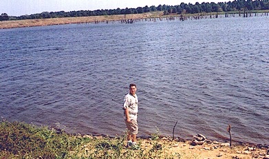

Hello my name is Phillip Irwin. Welcome to my Bushwhacker Lake page. Bushwhacker Lake is a small man-made lake in Vernon county Missouri. It is managed by the Missouri Department of Conservation
I have several good reasons for being interested in Bushwhacker Lake.